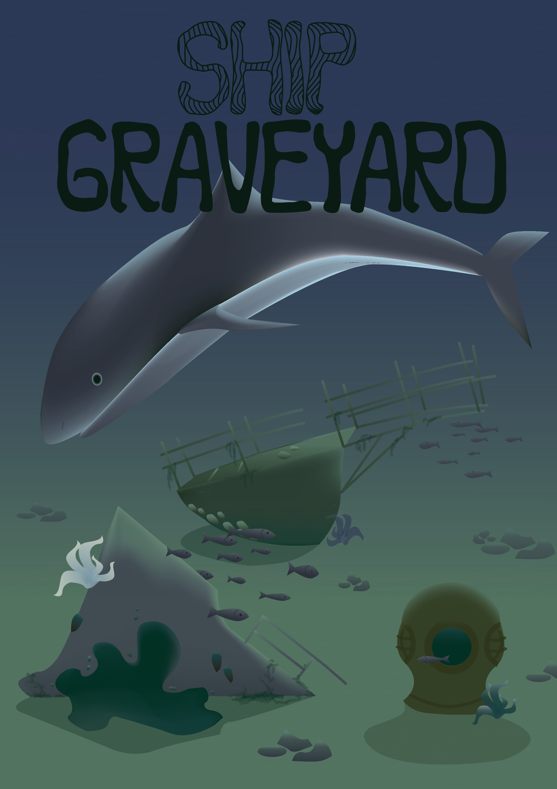

1. Rad fonta u Fontforge-u

2. Blend, maska pomoću naših inicijala i fonta

3. Crtanje oblika, rotacija, bojanje, prozirnost

4. Bojanje prijelaza pomoću alata Mesh ili Gradient
1. projektni zadatak-Tema je bila morska stoga sam napravila olupine brodova, morsku floru i faunu te ronilačku kacigu.

5. Popravak slika od ogrebotina i nedostataka, nadopuna elemenata

6. Koloriranje, rad s maskama i kanalima

7. Kombiniranje elemenata različitih slika, sjene

2. projektni zadatak - Trebalo je napraviti realističnu sliku kombinacijom zadanih i vlastitih elemenata, uključujući i svojih slika.

8. Kinemagraf
10 i 11. Rad web stranice: